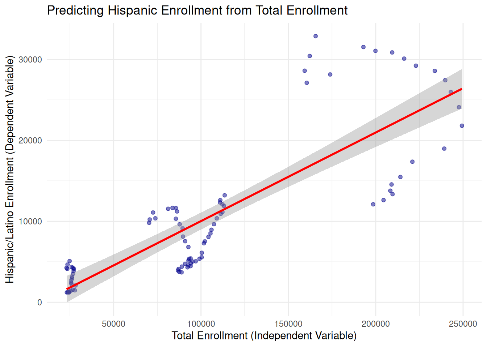

library(tidyverse)
# Load the data
ny_data <- read_csv("../data/race_ny.csv")
# Clean numeric variables
clean_data <- ny_data |>
mutate(
total_enroll = as.numeric(gsub(",", "", `Total Enrollment`)),
hispanic_enroll = as.numeric(gsub(",", "", `Hispanic/Latino`))
) |>
filter(!is.na(total_enroll), !is.na(hispanic_enroll))Solution - Lab 17: Regression models
MAT 186: Introduction to Data Science
Regression models - Official Solutions
To solve Lab 17, we focus on Correlation and Simple Linear Regression. This lab allows us to model the relationship between two numeric variables. In your SUNY dataset, we will investigate how Total Enrollment (the independent variable) predicts the number of Hispanic/Latino students (the dependent variable). ::: {.callout-note} ### Instructor Note Add your specific DCC lab answers below this box. :::
Lab 17 Official Solutions: Linear Modeling
In this lab, we use simple linear regression to quantify the relationship between total campus enrollment and Hispanic/Latino student populations.
Task 1: Data Preparation
We clean our numeric variables by removing commas and ensuring there are no missing values in our target columns.
Task 2: Correlation Coefficient
We calculate the Pearson correlation coefficient (r) to measure the strength and direction of the linear relationship.
r_value <- cor(clean_data$total_enroll, clean_data$hispanic_enroll)
cat("The correlation coefficient (r) is:", round(r_value, 4))The correlation coefficient (r) is: 0.8294Task 3: Scatter Plot with Regression Line
We visualize the relationship with a scatter plot and add a linear trend line.
ggplot(clean_data, aes(x = total_enroll, y = hispanic_enroll)) +
geom_point(alpha = 0.5, color = "darkblue") +
geom_smooth(method = "lm", color = "red", se = TRUE) +
labs(title = "Predicting Hispanic Enrollment from Total Enrollment",
x = "Total Enrollment (Independent Variable)",
y = "Hispanic/Latino Enrollment (Dependent Variable)") +
theme_minimal()

Task 4: Running the Linear Regression Model
We use the lm() function to create our mathematical model: Y = \beta_0 + \beta_1X.
# Formula: Y ~ X
model <- lm(hispanic_enroll ~ total_enroll, data = clean_data)
# Display the regression summary
summary(model)
Call:
lm(formula = hispanic_enroll ~ total_enroll, data = clean_data)
Residuals:
Min 1Q Median 3Q Max
-8839.9 -4143.0 -378.9 2436.0 15662.3
Coefficients:
Estimate Std. Error t value Pr(>|t|)
(Intercept) -9.117e+02 9.735e+02 -0.936 0.352
total_enroll 1.094e-01 7.767e-03 14.087 <2e-16 ***
---
Signif. codes: 0 '***' 0.001 '**' 0.01 '*' 0.05 '.' 0.1 ' ' 1
Residual standard error: 5018 on 90 degrees of freedom
Multiple R-squared: 0.688, Adjusted R-squared: 0.6845
F-statistic: 198.4 on 1 and 90 DF, p-value: < 2.2e-16Task 5: Conclusion
Based on our linear regression analysis, we can draw the following conclusions:
Strength of Relationship: There is a very strong positive correlation (r \approx 0.83) between total enrollment and Hispanic/Latino enrollment.
The Slope: The slope coefficient is approximately r round(coef(model)[2], 4). This means that for every 1 additional student enrolled at a SUNY institution, we expect the Hispanic/Latino student population to increase by about r round(coef(model)[2], 2) students on average.
Predictive Power (R^2): The R-squared value of r round(summary(model)r.squared, 4) suggests that roughly r round(summary(model)r.squared * 100, 1)% of the variation in Hispanic student enrollment can be explained by the total size of the institution.